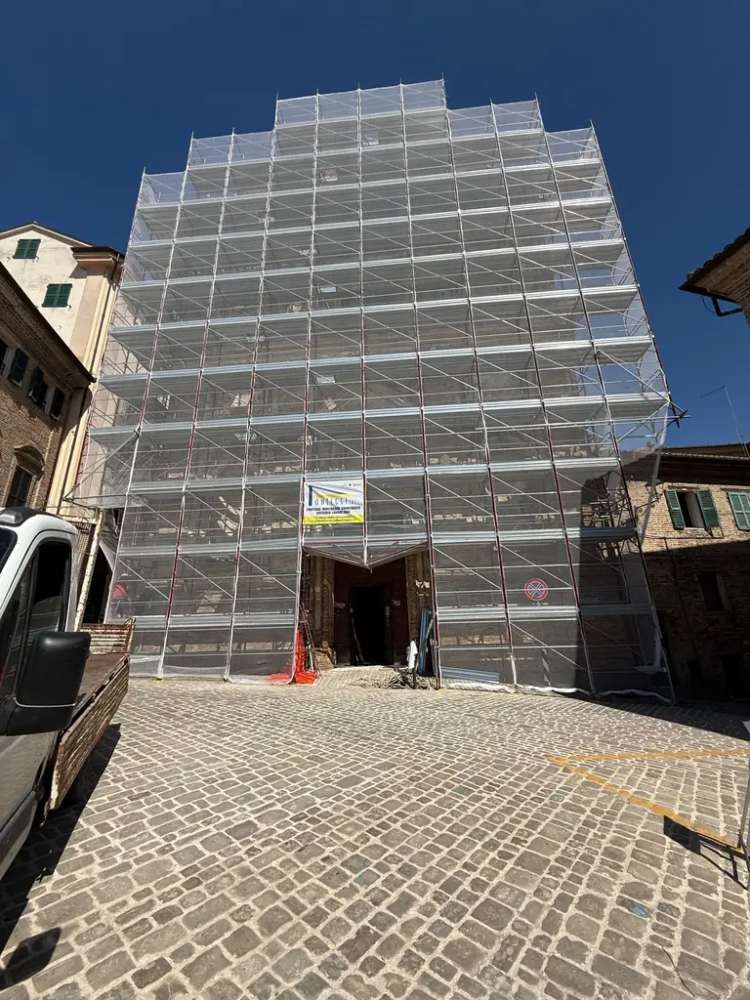

Montaggio e smontaggio
Installazione e rimozione del ponteggio, coordinate con il programma del cantiere.
Scopri il servizio →
Noleggio, montaggio e smontaggio ponteggi a Osimo, Ancona e nelle Marche. Un contatto diretto per organizzare il tuo intervento.
ANNI DI ESPERIENZA
CANTIERI COMPLETATI
CLIENTI SODDISFATTI
I Nostri Servizi
Dalle esigenze del progetto all’organizzazione del ponteggio: scopri i servizi disponibili.
Installazione e rimozione del ponteggio, coordinate con il programma del cantiere.
Scopri il servizio →Fornitura del ponteggio per la durata e le lavorazioni concordate nella proposta.
Scopri il servizio →Strutture a supporto dei lavori su facciate, balconi e coperture.
Scopri il servizio →Un confronto su edificio, accessi e attività per definire il servizio richiesto.
Scopri il servizio →Portfolio
Tutti i 14 cantieri del portfolio, in scorrimento lento e continuo. Apri una fotografia per ingrandirla o visita la galleria completa.
Scorri i cantieri. Tocca una foto per ingrandirla o apri la scheda per approfondire.

Ponteggio disposto lungo la facciata di un edificio a Roma, con impalcati su più livelli e delimitazione dell’area di cantiere.

Vista del ponteggio sul condominio di San Biagio: struttura sviluppata in altezza davanti alla facciata dell’edificio.

Allestimento di un ponteggio sulla facciata di un edificio a Catania, con una gru presente nell’area di lavoro.

Ponteggio montato lungo il prospetto di un complesso edilizio a Offagna, con piani di lavoro distribuiti sulla facciata.

Facciata di una chiesa a Osimo rivestita da ponteggio e teli protettivi, nel cantiere di restauro documentato nella fotografia.

Vista d’angolo di un ponteggio a Offagna, esteso su due lati dell’edificio e affiancato dalla delimitazione del cantiere.

Ponteggio sviluppato lungo la facciata di un edificio multipiano, con una successione di impalcati e protezioni esterne.

Vista del fabbricato rivestito da teli sul ponteggio, con ingresso al cantiere e delimitazioni visibili al piano strada.

Ponteggio attorno a un edificio condominiale multipiano, fotografato dalla strada con la recinzione del cantiere in primo piano.

Ponteggio rivestito con teli lungo il fronte dell’edificio; la fotografia mostra la schermatura esterna e la base del cantiere.

Vista ravvicinata del ponteggio davanti a un palazzo in ristrutturazione, con materiali e area di lavoro in primo piano.

Palazzina rivestita da ponteggio e teli esterni, fotografata dal piazzale antistante l’edificio.

Ponteggio e teli protettivi sulla facciata di un municipio, con la torre e il parcheggio antistante visibili nella fotografia.

Ponteggio esteso sulla facciata e sul lato di un edificio in ristrutturazione, con piani di lavoro distribuiti in altezza.
Fotografie originali, titoli e descrizioni degli interventi.
Chi siamo
La nostra sede centrale è a Osimo Stazione (AN), punto strategico per servire rapidamente tutte le Marche e il Centro Italia.
Grazie alla nostra flotta di mezzi e alle squadre specializzate, gestiamo grandi cantieri e appalti in tutto il territorio nazionale.
Ci occupiamo di noleggio, montaggio e smontaggio ponteggi per imprese, condomini e privati, organizzando il lavoro in base alle esigenze del cantiere.
La mappa mostra la scheda dell’attività e si carica automaticamente avvicinandoti alla sezione. Informazioni sul servizio Google Maps.
Contattaci
Via dell'Industria 5,
60027 Osimo Stazione (AN)
Nome, telefono e comune ci aiutano a ricontattarti. I campi con * sono obbligatori; l’email è facoltativa.